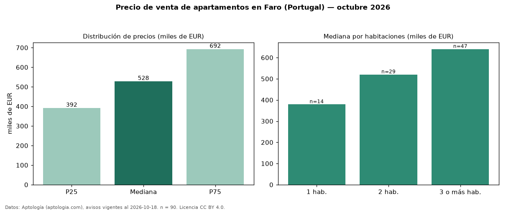

Precio de venta de apartamentos en Faro (Portugal) — octubre 2026
En Faro (Portugal), la mediana de precio de venta de apartamentos es EUR 528.000, según 90 avisos vigentes. Por metro cuadrado, la mediana es EUR 5.101/m² (n = 86 avisos con área). Por precio mediano es la ciudad 2 de 3 de Portugal con al menos 30 avisos de apartamentos en venta (EUR). La mediana de toda la vivienda en venta de Faro (EUR) es EUR 589.275; los apartamentos quedan −10 %. El área mediana anunciada es 119 m². El segmento con más oferta es el de 3 o más habitaciones (47 avisos, mediana EUR 640.000); pasar de 1 habitación a 3 o más habitaciones cambia la mediana +69 %. La mitad central de los avisos va de EUR 391.500 a EUR 692.500 (razón 1,8), una dispersión moderada. 82 % de los avisos con el dato declara estacionamiento o cochera. Datos: Aptología (aptologia.com), CC BY 4.0 — https://www.aptologia.com/pt/venda/faro. Archivos: PDF, CSV con las cifras y gráfica PNG.

| Avisos únicos | 90 |
|---|---|
| Percentil 25 | COP 391.500 |
| Mediana | COP 528.000 |
| Percentil 75 | COP 692.500 |
| Mediana por m² | COP 5.101 |
Fuente: avisos vigentes de portales inmobiliarios recopilados por Aptología, deduplicados (mínimo 30 avisos únicos por celda). Precios pedidos, no cerrados. Fecha: 2026-10-18.